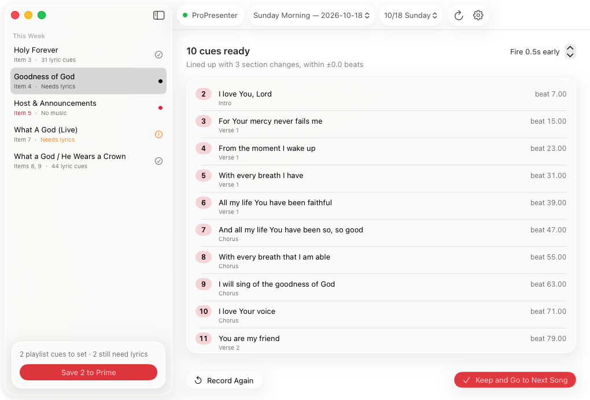
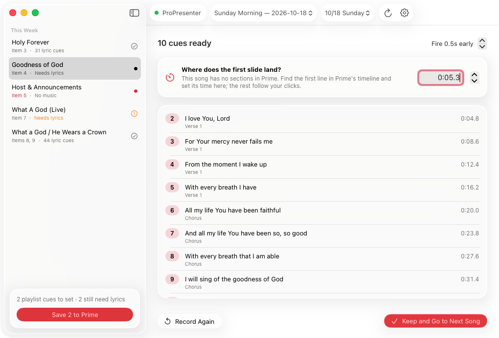

How it works
Record a song once.
Prime runs the slides after that.
No typing in beat numbers or dragging cues around in Prime. Just do what you already do on a Sunday.
-
Press Record and play the song
Pick the song from this week's setlist, press Record, and start it in Prime from the top.
-
Click through the slides
Advance the lyrics in ProPresenter the way you would on a Sunday. The app catches every click.
-
Save to Prime
Check the list and save. Prime sends the MIDI cues from then on, just ahead of the words.
Lined up with the song
Timing that snaps to the music.
Each section change you click (Verse, Chorus, Bridge) is matched to that section in Prime, so a cue lands on the beat even if your click was a little late. Cues fire half a second early by default to cover MIDI delay.

Any song in Prime
Even songs without sections.
Uploaded songs and songs with tempo changes are timed by the clock. Tell the app where the first slide lands and the rest follow your clicks.

Built for every week
Set up Sunday in minutes.
Open ProPresenter and the app, and it walks you through this week's setlist.
Playlist items, matched
Each song is matched to its ProPresenter playlist item, so the right song comes up as it starts.
Missing lyrics, flagged
Songs without lyric cues are marked, and Keep moves you straight to the next one.
Your MIDI setup
Defaults to note 19 for lyrics and 18 for playlist items. Change the notes, channel and lead time in Settings.
Backed up first
Every save copies Prime's library to Documents/PrimeBackups. Lights and other cues are never touched.
Updates itself
New versions arrive on their own, so every campus stays on the same one. Never mid-recording.
A real Mac app
Native, signed and notarized by Apple. Drag it into Applications and you're set.
Before you start
Two things to know.
That's all the setup there is.
-
Turn on Network in ProPresenter. In ProPresenter, go to Settings › Network and check Enable Network, then enter the same port in the app. That's how it sees your slide clicks.
-
Prime closes while saving. Cues are written straight into Prime's library, so the app asks Prime to quit for that step, then you open it and save to the cloud as usual.
Ready for Sunday?
Download for MacFree · macOS 14 or later · Apple silicon and Intel